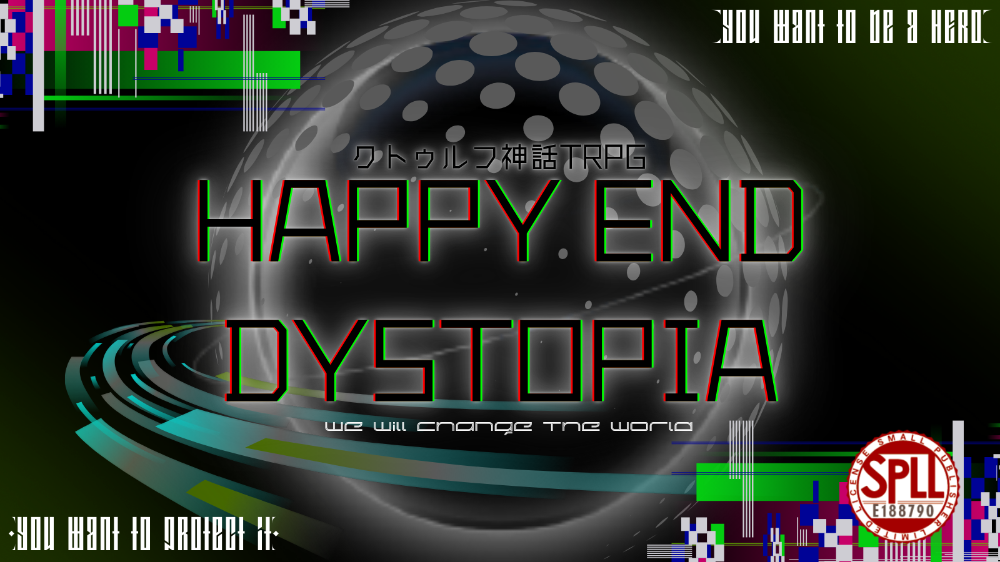

作品紹介
『世界侵食事件』
世界は、黒い何かに覆われるという、未曽有の事件に襲われていた。
そんな中で立ち上がる二人の探索者。
彼らはヒーローへと変身し、強大な敵と戦うこととなる。
変身ヒーロー×バディ×命懸けの戦い
鬼詠シナリオの面白い部分をこれでもかと詰め込んだ至極のシナリオ
継続探索者でも行けてしまう、異色のヒーローシナリオ！
過去作『浮世の星を見残して』とは地続きの世界線であり、過去作を知っている人も、知らない人も100％楽しめる！
そしてなんと、変身ヒーロー素材は無料！
『浮世の星を見残して』が半額になるお得なセットも！
※本作はクトゥルフ神話TRPG第6版向けの作品です。シナリオのあらすじやプレイ情報など、詳細は配布ページをご確認ください。
ハンドアウト
☆共通ハンドアウト
貴方達は『世界侵食事件』の被害者である。この事件の真相については何も知らないが、何が何でもその真相を知り、可能であれば解決したいと考えている。
そのためであれば、多少の危険も顧みないほどに。
☆HO1【平凡】
「貴方は強くなりたい。」
貴方は特別な力など持っていない。だが、そのような力を求めている。
今度こそ、ヒーローになるために。
・成長傾向:[攻撃重視]
・変身形態:[仮面〇イダーのようなアーマー装備タイプ]
『探索者条件』
貴方にはかつて大切な人がいた。しかし、その人は既に亡くなっている。
☆HO2【非凡】
「貴方はその人を守りたい。」
貴方は特別な力を持っている。だが、更なる力を求めている。
最期まで、大切な人を守るために。
・成長傾向:[防御重視]
・変身形態:[プ〇キュアのようなコスチュームorサ〇ヤ人のような髪色変化タイプ]
『探索者条件』
貴方には現在、大切な人がいる。そして、その人との仲は良好である。
作品情報
- システム：クトゥルフ神話TRPG 第6版
- 配布・頒布先：BOOTH
- ・プレイ人数：2人
- ・推定プレイ時間：14時間～16時間
- ・背景：現代日本
- ・ロスト率：低（そこの継続クン、SAN回復はしてきなさい。）
- ・推奨技能：戦闘技能、目星、聞き耳、図書館、交渉系技能
- ・準推奨技能：オカルト、心理学
- ・新規継続不問
- ・オススメ探索者：自分の運命に決着を付けたい人
- ・プレイヤー傾向：何があっても最後まで希望を捨てない人
- 神話生物への独自の解釈が多数含まれます。
- オリジナルAF・呪文・神話生物が多数登場します。
配布ページ
作品の詳細、価格、ダウンロード内容、利用条件などは、以下のBOOTHページでご確認ください。
BOOTHで作品を見る ↗#ハピディス